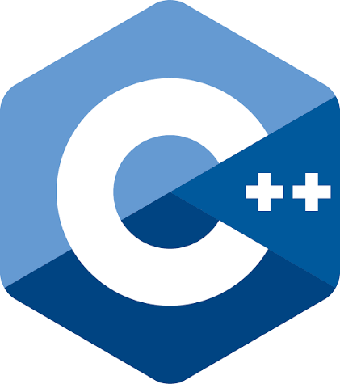
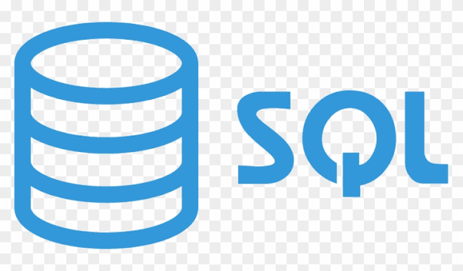
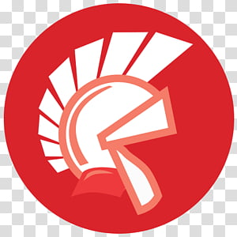
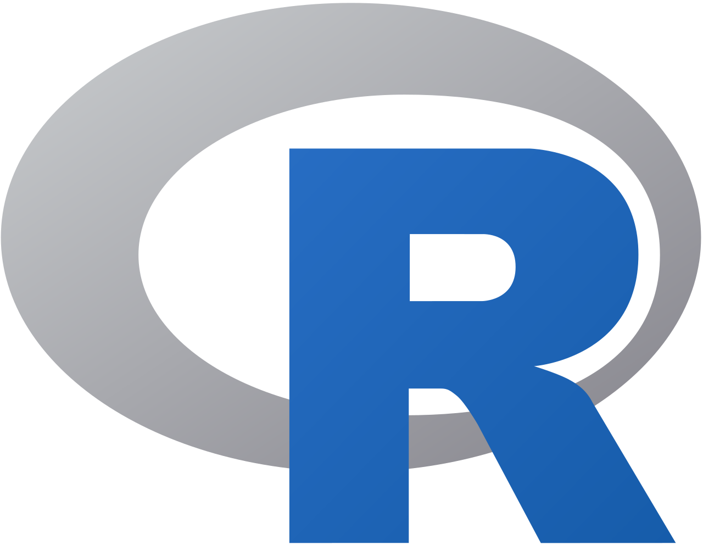

Principais Linguagens de Programação
Uma lista das linguagens mais usadas atualmente no desenvolvimento de software, com base no ranking divulgado pelo Blog da Caiena.
-

Python
Reconhecida por sua sintaxe clara e legível, é considerada uma das linguagens mais fáceis de aprender, especialmente para iniciantes. É muito usada em inteligência artificial, ciência de dados e automação.
Site oficial → -

C
Uma das linguagens mais antigas e influentes ainda em uso, muito aplicada em sistemas operacionais, drivers e software embarcado, onde o controle de hardware é essencial.
Saiba mais → -

Java
Linguagem multiplataforma, muito usada em aplicações empresariais, Android e sistemas bancários. Sua JVM permite "escrever uma vez, executar em qualquer lugar".
Site oficial → -

C++
Evolução do C com orientação a objetos, muito usada no desenvolvimento de jogos e softwares gráficos, com alto controle sobre o hardware e ótimo desempenho.
Saiba mais → -

C#
Criada pela Microsoft, é eleita Linguagem de Programação do Ano de 2025 pelo TIOBE. Muito utilizada com o Unity para desenvolvimento de jogos e com o framework .NET.
Site oficial → -

JavaScript
A linguagem mais popular segundo o Developer Survey do Stack Overflow, essencial para o desenvolvimento web, tanto no front-end quanto no back-end com Node.js.
Saiba mais → -

Visual Basic
Linguagem da Microsoft voltada para iniciantes, com sintaxe simples, amplamente usada para automatizar tarefas em aplicações do pacote Office.
Saiba mais → -

SQL
Linguagem padrão para consultar e manipular bancos de dados relacionais, essencial em praticamente qualquer sistema que armazene informações.
Saiba mais → -

Delphi / Object Pascal
Linguagem voltada para o desenvolvimento rápido de aplicações desktop com interface gráfica, ainda presente em sistemas corporativos legados no Brasil.
Saiba mais → -

R
Voltada para estatística e análise de dados, é muito usada em ciência de dados e computação estatística, retornando ao top 10 do ranking em 2026.
Site oficial →
Fonte: Blog da Caiena, com base no Índice TIOBE de janeiro de 2026.